ORT Engine · Ghostfish Slot Manager es la aplicación de la línea DRDT para manejar las 16 posiciones (slots) de prueba de unidades Ghostfish desde una sola pantalla.
Por cada slot, la app hace todo el trabajo que antes se hacía a mano:
read_eeprom_ghostfish.py y obtiene su serial y su número de parte (P/N).SLOT 01, SLOT 02… y corre la regresión con esos datos:~/viper-test/opentest/tools/ot_regression.py <slot> <P/N> <serial> <loops> 1200| Componente | Para qué sirve | ¿Obligatorio? |
|---|---|---|
| Ubuntu con gnome-terminal | Abrir una terminal por cada slot | Sí |
| Python 3 | Ejecutar el script de lectura de EEPROM | Sí |
read_eeprom_ghostfish.py | Leer serial y P/N de cada unidad | Sí |
~/viper-test/opentest/tools/ot_regression.py | La prueba de regresión | Sí (en la PC de pruebas) |
| wmctrl | Botón Ir a la terminal | Opcional |
| Sesión X11 ("Ubuntu en Xorg") | Traer ventanas al frente | Opcional |
La app busca read_eeprom_ghostfish.py por sí sola en tu Escritorio, Documentos, Descargas, Música, ~/scripts y en el resto de tu carpeta personal. Basta con que esté en alguno de esos lugares.
Descarga el archivo .deb de la última versión desde GitHub → ort-engine → Releases e instálalo desde la terminal:
cd ~/Downloads sudo apt install ./ort-engine_*_amd64.deb
./ es importante: sin él, apt busca el programa en internet en lugar de usar tu archivo. Si tu carpeta se llama Descargas, usa cd ~/Descargas.Solo se instala así la primera vez. Después, la app se actualiza sola (ver capítulo Actualizaciones).
La primera vez que abres ORT Engine aparece un asistente de 3 pasos que deja la PC lista para trabajar.
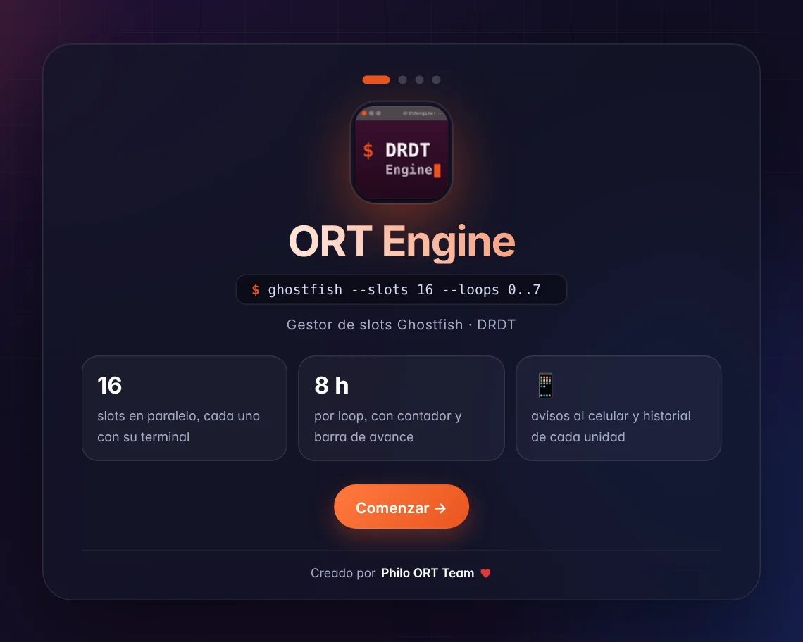
La app revisa que la PC tenga todo lo del capítulo anterior. Cada punto sale como Listo, Se puede instalar o con error.
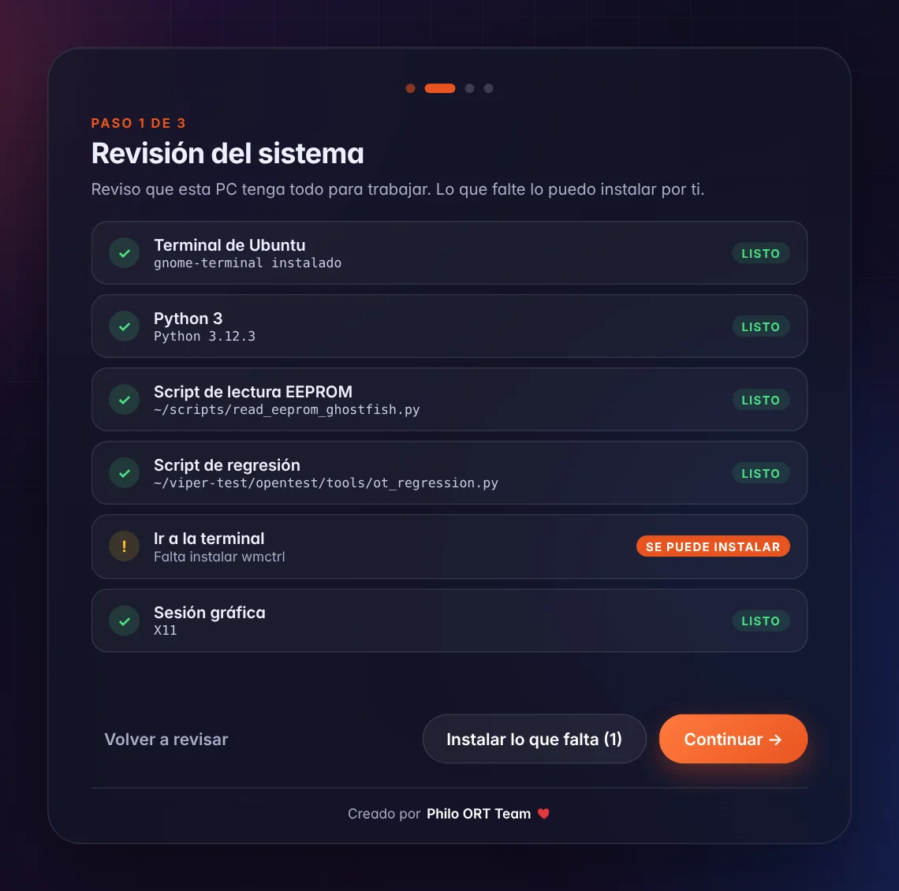
read_eeprom_ghostfish.py, ot_regression.py) no se instalan: si faltan, cópialos a la PC y presiona Volver a revisar.Escribe el tema de ntfy al que te suscribiste en tu celular y presiona Enviar prueba. Si no quieres avisos, desmarca la casilla y continúa. Lo puedes cambiar después con la campana 🔔 (capítulo Notificaciones al celular).
Presiona Entrar a ORT Engine.
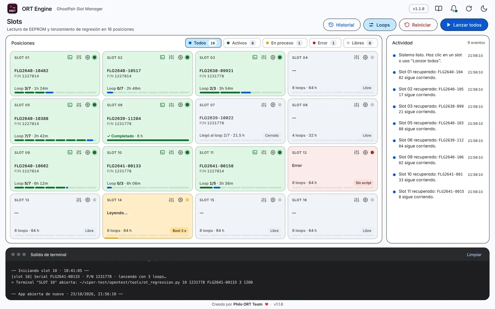
1 2 3 4 5 6 7| 1 | Logo y nombre. Clic en el logo = abrir el asistente de bienvenida. |
| 2 | Versión, 🔔 avisos al celular, ⟳ buscar actualizaciones, ☾ modo oscuro y 📖 Manual. |
| 3 | Historial · Loops · Reiniciar · Lanzar todos. Las acciones generales. |
| 4 | Filtros con contador: Todos, Activos, En proceso, Error y Libres. |
| 5 | Las 16 posiciones. Cada tarjeta es un slot. |
| 6 | Actividad: todo lo que pasa, con hora. |
| 7 | Salida de terminal: el detalle técnico de cada lectura y lanzamiento. |
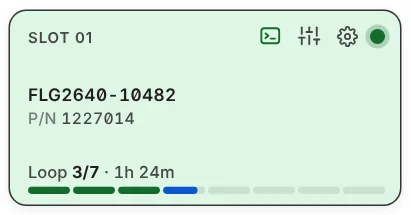
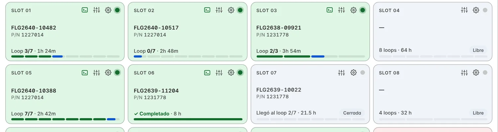
| Se ve así | Estado | Qué significa |
|---|---|---|
| Libre | Libre | No hay nada corriendo. Muestra cuántos loops tiene configurados (ej. 8 loops · 64 h). |
| Boot 12 s | Leyendo | Está leyendo la EEPROM. Si falla, dice Reintento 2, Reintento 3… y sigue intentando. |
| Loop 3/7 | Activo (verde) | La unidad tiene serial, su terminal está abierta y la regresión está corriendo. |
| ✓ Completado | Completado | Ya pasaron todas las horas de sus loops. La terminal sigue abierta para revisar el resultado. |
| Cerrada | Cerrada | Se cerró la terminal. La tarjeta conserva el serial, P/N y hasta qué loop llegó. |
| ⚠ Slot caído | Caído | La terminal reportó un error de la unidad (por ejemplo Connection refused o un Traceback). Ver capítulo Slot caído y sistema caído. |
| ⚠ Sistema caído | Caído | Falló el servicio de pruebas de la PC (puerto 8090). Sale además una banda roja arriba. |
| Sin script | Error | No se encontró read_eeprom_ghostfish.py. |
| Interrumpido | Error | Se cerró la app mientras el slot leía. Vuelve a lanzarlo. |
SLOT NN y empieza la regresión con los loops de ese slot.Lanzar todos arranca los slots que estén libres o con error, uno cada 5 segundos para no saturar. Los slots que ya están corriendo no se tocan.
Cada loop dura 8 horas y se cuentan desde 0. El número que eliges es el último loop:
| Eliges | Loops que corre | Total de loops | Duración |
|---|---|---|---|
| 0 | 0 | 1 | 8 h |
| 1 | 0 y 1 | 2 | 16 h |
| 3 | 0 a 3 | 4 | 32 h |
| 5 | 0 a 5 | 6 | 48 h |
| 7 | 0 a 7 | 8 | 64 h |
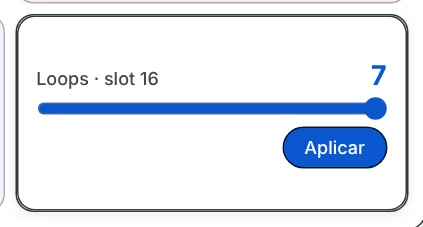
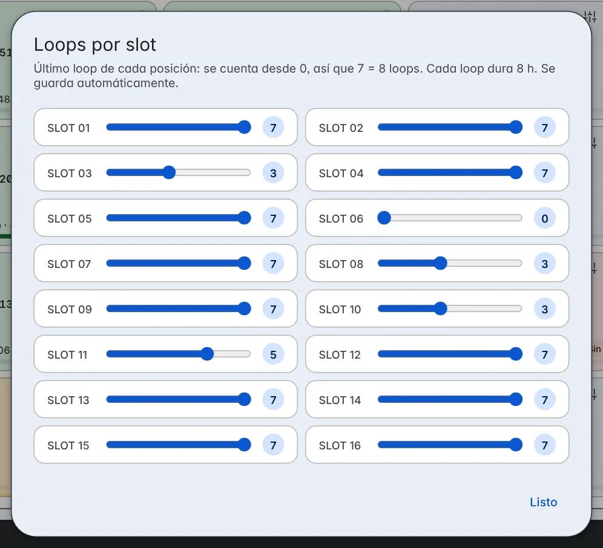
La app lee en vivo lo que imprime la terminal de cada slot. Cada vez que aparece Execution N started successfully, el contador pasa al loop N y empieza a contar sus 8 horas desde ese momento. Así el contador va con la prueba real y no solo con el reloj. En la terminal ves exactamente lo mismo que antes.
Mientras corre, la tarjeta dice por ejemplo Loop 3/7 · 1h 24m. Si pasas el mouse encima, te dice el tiempo total que falta y a qué hora termina. Cuando el script termina sin error, la tarjeta dice ✓ Completado y te avisa con una notificación en la PC (y al celular, si lo tienes activado).
Si la terminal de un slot imprime un error, la app lo detecta al momento y te avisa.
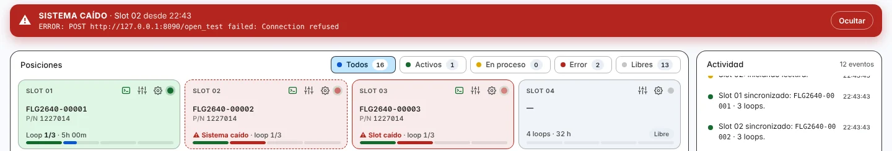
| Aviso | Cuándo sale | Qué revisar |
|---|---|---|
| ⚠ Sistema caído | Un error que menciona el puerto 8090, localhost o 127.0.0.1, por ejemplo 8090 failed o Connection refused al servicio. Es el servicio de pruebas de la PC, así que puede afectar a todos los slots. | Que el servicio de 127.0.0.1:8090/open_test esté arriba (abre esa página en Chrome). |
| ⚠ Slot caído | Cualquier otro error: refused, Traceback, ERROR, FAIL, timeout, unreachable… o que el script termine con un código distinto de 0. | Esa unidad: cable, que esté encendida y la salida de su terminal (⚙ → Ir a la terminal). |
Execution N started successfully, el slot se recupera solo y Actividad lo anota.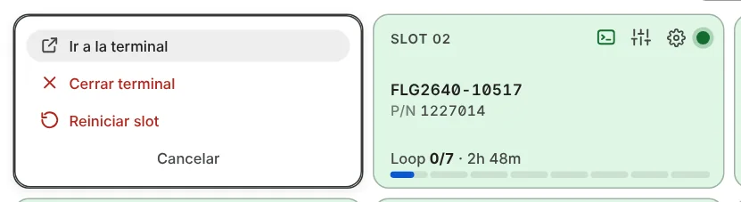
| Ir a la terminal | Trae al frente la ventana SLOT NN. Necesita wmctrl y sesión X11; en Wayland Ubuntu no lo permite. |
| Cerrar terminal | Cierra la terminal del slot y detiene la prueba que corre en ella. Pide confirmación. |
| Reiniciar slot | Abre Reiniciar slots con ese slot ya marcado (capítulo siguiente). |
Si el slot no tiene terminal abierta, Ir a la terminal y Cerrar terminal se ven apagadas.
Reiniciar deja uno, varios o todos los slots en Libre dentro de la app. Está protegido con contraseña (pídesela al responsable de la línea).
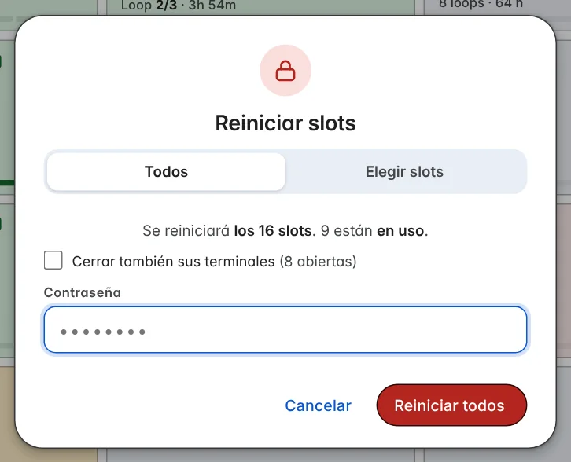
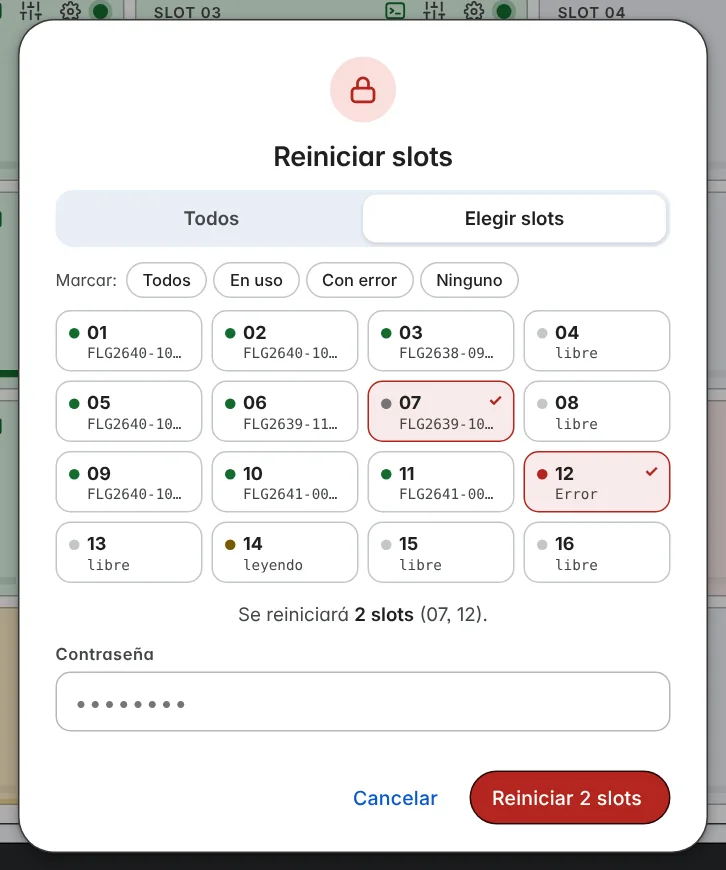
Cada slot reiniciado queda registrado en el Historial con el motivo Slot reiniciado (o Sistema reiniciado si fueron los 16).
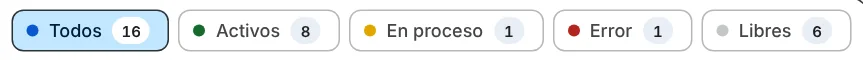
Arriba de los slots. Cada filtro dice cuántos slots hay en ese estado. Al tocar uno, los slots que no coinciden se ven más tenues para que encuentres rápido, por ejemplo, los que tienen error. Todos regresa a la vista normal.
Registra cada unidad que entra a un slot: serial, P/N, slot, hora de entrada, loops, avance, hora de salida y por qué salió.
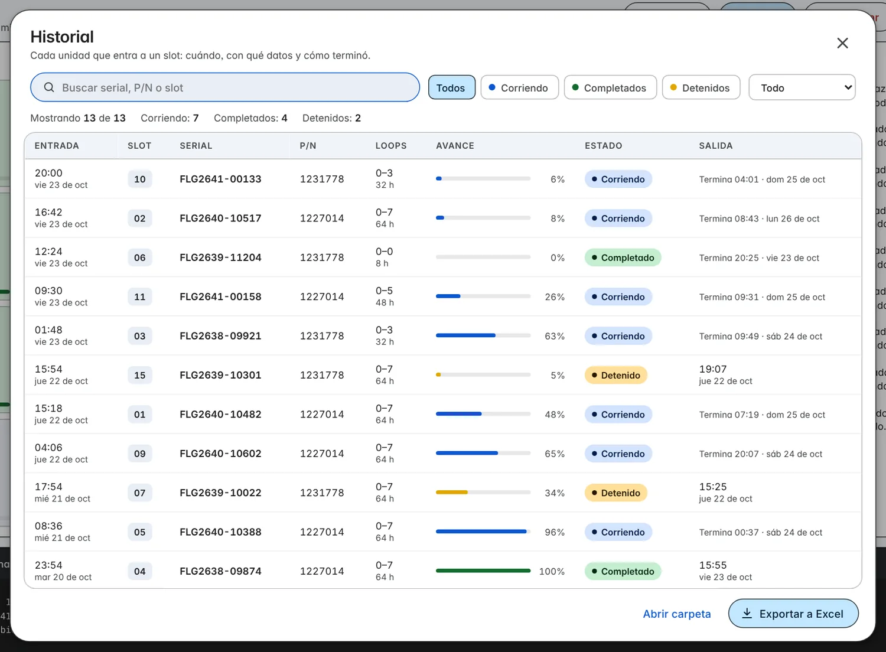
.csv que abre Excel o LibreOffice con acentos correctos.~/.config/ort-engine/historial.json.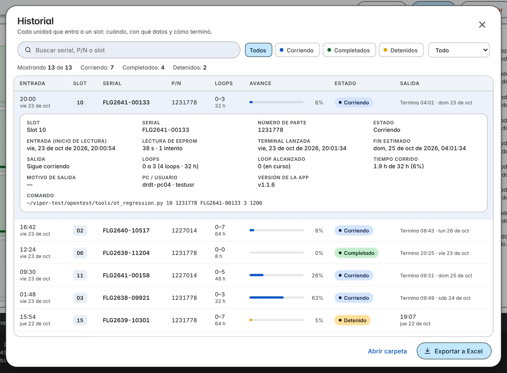
Motivos de salida que vas a ver: Terminó sus N loops, La ventana de la terminal se cerró, Terminal cerrada desde la app, Se volvió a lanzar el slot, Slot reiniciado, Sistema reiniciado y La terminal se cerró mientras la app estaba cerrada.
ORT Engine puede mandarte avisos a la app gratuita ntfy (Android y iPhone).
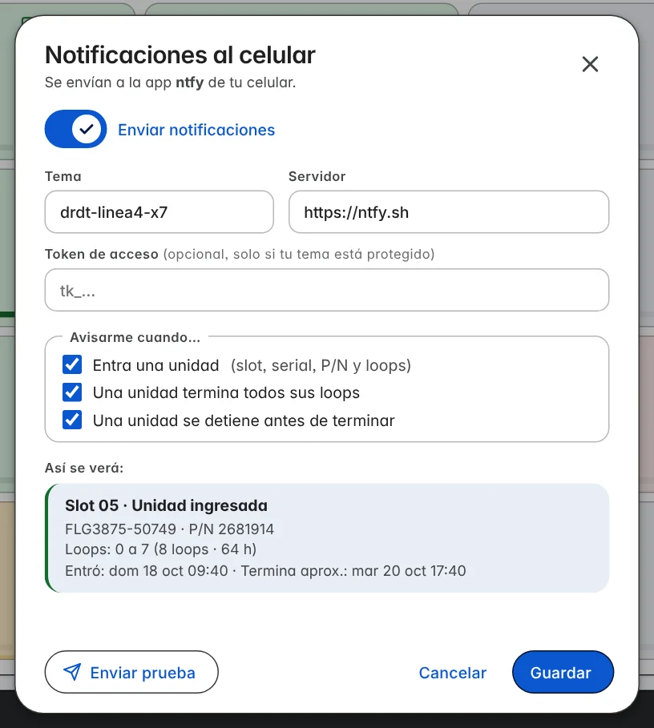
drdt-linea4-x7).La campana tiene un punto verde cuando los avisos están activos.
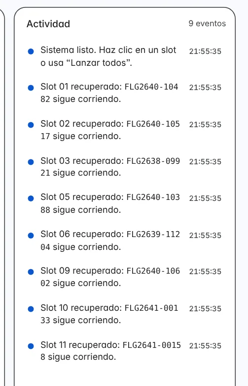
Actividad (a la derecha) es la bitácora de lo que pasa, con hora y color: azul información, amarillo en proceso, verde éxito y rojo error. Guarda los últimos 80 eventos.
Salida de terminal (abajo) muestra el detalle técnico: cada lectura, reintentos y el comando con el que se abrió cada terminal. Limpiar la vacía.
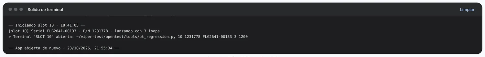
Puedes cerrar ORT Engine sin miedo: las terminales siguen corriendo y al volver a abrir la app todo aparece como lo dejaste.
| Qué | Al volver a abrir la app… |
|---|---|
| Slots corriendo | Se recuperan con su serial, P/N y contador de loops (dice Slot 01 recuperado en Actividad). |
| Slots con terminal cerrada | Conservan serial, P/N, Cerrada o Completado y hasta qué loop llegaron. |
| Slots con error | Siguen en rojo con su error. |
| Slots que estaban leyendo | Salen como Interrumpido para que los vuelvas a lanzar. |
| Loops de cada slot | Se recuerdan. |
| Actividad y Salida de terminal | Se recuperan, con una línea App abierta de nuevo para ubicarte. |
| Historial, avisos al celular y tema claro/oscuro | Se recuerdan. |
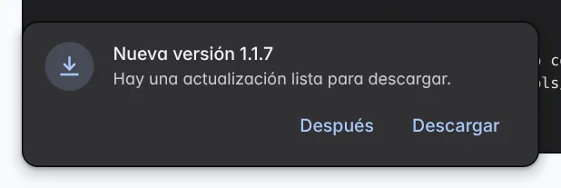
La versión que tienes se ve arriba a la derecha y en el pie de la pantalla.
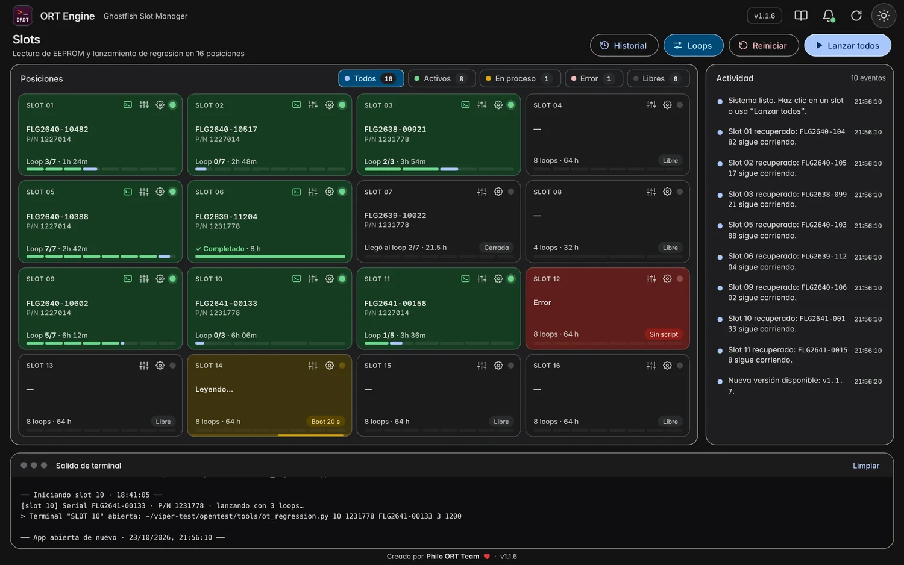
El botón ☾ / ☀ de arriba a la derecha cambia entre modo claro y oscuro. La app recuerda tu elección.
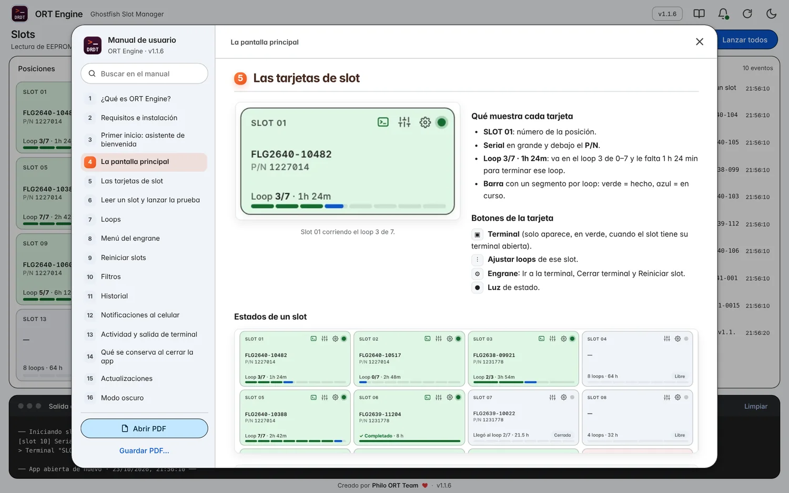
| Lo que pasa | Qué hacer |
|---|---|
| Sale Sistema caído | El servicio de pruebas de la PC (8090) no responde. Ábrelo en Chrome (127.0.0.1:8090/open_test) y reinícialo si hace falta. Los slots se recuperan solos cuando vuelve a arrancar un loop. |
| Sale Slot caído | Pasa el mouse sobre la tarjeta para ver el error. Revisa la unidad y su terminal. Si el script ya terminó, vuelve a lanzar el slot. |
| El slot dice Sin script | Falta read_eeprom_ghostfish.py. Cópialo a tu Escritorio, Documentos o ~/scripts y vuelve a lanzar el slot. |
| El slot se queda en Reintento 2, 3, 4… | La unidad no responde. Revisa que esté bien conectada y encendida. Mira la Salida de terminal para ver el error del script. |
| Ir a la terminal no hace nada | Instala wmctrl (sudo apt install wmctrl) y entra a Ubuntu con "Ubuntu en Xorg". En Wayland no se puede traer ventanas al frente. |
| El slot salió Cerrada sin que yo la cerrara | La ventana de la terminal se cerró o la PC se reinició. El historial dice hasta qué loop llegó. Vuelve a lanzar el slot si hay que repetir la prueba. |
| El slot salió Interrumpido | La app se cerró mientras leía. Haz clic en el slot para volver a lanzarlo. |
| Reiniciar dice Contraseña incorrecta | Pide la contraseña de reinicio al responsable de la línea. |
| No me llegan avisos al celular | Revisa que el tema sea idéntico en el celular y en la app, que el interruptor esté activado y usa Enviar prueba. La PC necesita internet. |
| No me aparece la actualización | Solo funciona con la app instalada desde el .deb. Revisa con el botón ⟳ y que la PC tenga internet. |
| La terminal se abre y se cierra de inmediato | Revisa que exista ~/viper-test/opentest/tools/ot_regression.py (paso 1 del asistente: clic en el logo). |